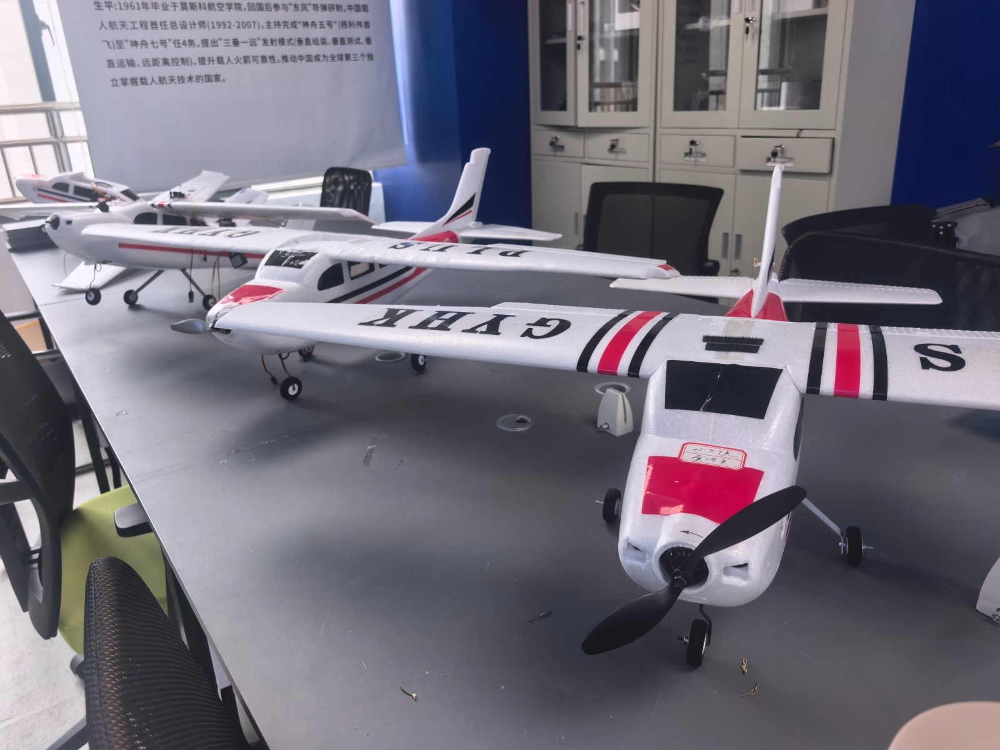

01Aerial Robotics
智能无人机
聚焦无人机本身的关键技术，以真实飞行器为研究对象，探索智能无人机的技术与方法。
媒体计算实验室下设研究团队
面向智能无人机与智能边缘设备，研究无人机关键技术，探索运行于无人机、机械臂、无人车等真实载体上的端侧智能体。
Aerial Robotics and Edge Intelligence
Algorithms Laboratory

01 / RESEARCH
以无人机为核心研究对象，
探索智能在边缘设备上的实现。
聚焦无人机本身的关键技术，以真实飞行器为研究对象，探索智能无人机的技术与方法。
面向智能边缘设备，以无人机、机械臂、无人车等设备为载体，探索运行于真实环境中的端侧智能体。
研究成果、论文与项目演示将陆续更新。
02 / COLLABORATION
围绕智能无人机与端侧智能体，交流实际场景中的技术问题，探讨研究与应用的连接。
欢迎整理您的设备平台、任务目标与当前技术问题，以便后续开展合作交流。
合作联系人与联系方式尚未公布。
03 / JOIN US
如果你对无人机、边缘智能或真实设备上的智能体感兴趣，欢迎关注 AERIAL Lab 的研究与参与机会。
你可以提前准备个人简介、感兴趣的研究问题，以及相关课程或项目经历。
开放课题、申请要求与联系渠道将另行公布。